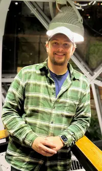

Sadler Kyne | WDD 130
Hello, My name is Sadler Kyne. I am from Texas and enjoy traveling to new places with my wife and child, while learning and expanding my skillset.
Hello, My name is Sadler Kyne. I am from Texas and enjoy traveling to new places with my wife and child, while learning and expanding my skillset.